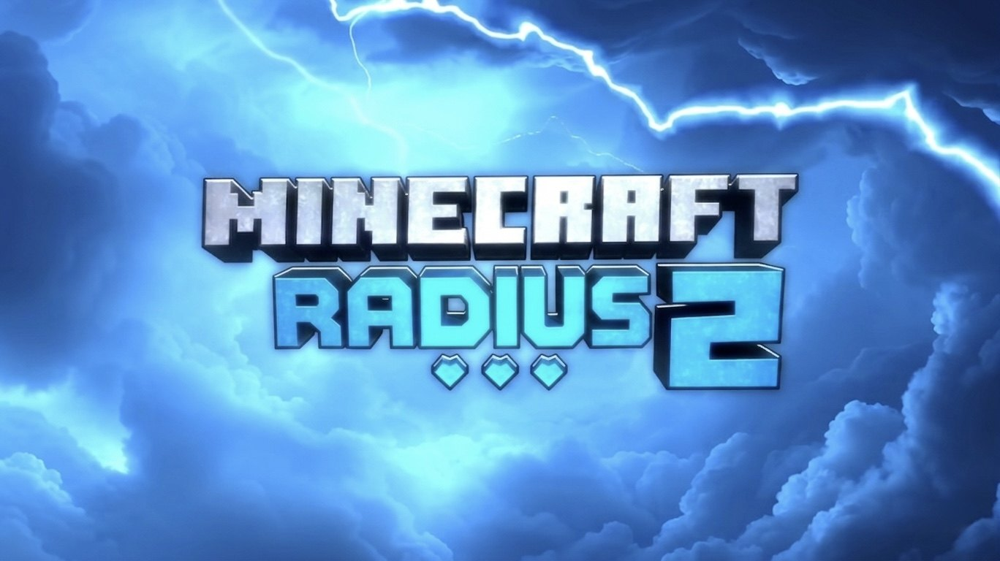

Teams per Tierlist
Das Team stuft alle Spieler ein. Daraus entstehen zwölf ausgeglichene Teams mit je einem General.
Start am 20. November 2026 · 18:00 Uhr
48 Spieler, eine 4k-Map und rund fünf Wochen Survival. Teams bleiben zusammen, Herzen gehen nur im Combat verloren.

Das Projekt
Radius 2 ist ein Survival-Projekt nach dem Vorbild von Minecraft Helden. Jedes Team hat vier gemeinsame Herzen, und die gehen ausschließlich im Combat verloren.
Das Team stuft alle Spieler ein. Daraus entstehen zwölf ausgeglichene Teams mit je einem General.
Jeder Tod im Kampf kostet das ganze Team ein Herz. Sind alle vier weg, ist das Team raus.
Herzen, Kills und Ereignisse kommen direkt aus dem Spiel und sind in Sekunden hier zu sehen.
Live
Teams werden geladen …
Spieler
Spieler werden geladen …
Entdecken
Verlorene Herzen, Kills und Ereignisse direkt aus dem Spiel.
TeamsMitglieder, General und Herzen jedes Teams.
CreatorYouTube- und TikTok-Kanäle der Spieler.
RegelnHerzen, Combat-Limits und Hauptevents.
AblaufDie 4k-Map und was wann passiert.
FAQAlles Wichtige auf einen Blick.